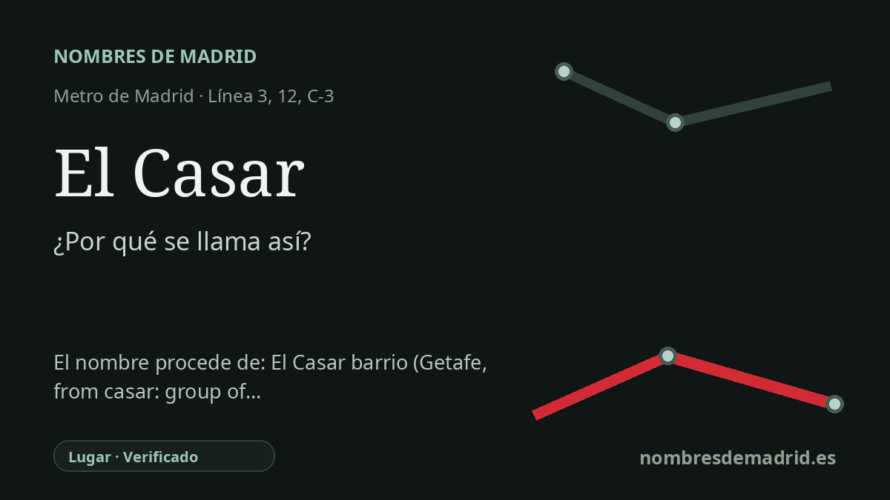

Publicado el · Investigación de Nombres de Madrid · Cómo verificamos cada origen · 8 fuentes consultadas
Respuesta rápida
El Casar toma su nombre de la zona de El Casar, en Getafe Norte, junto a la avenida del Casar. El topónimo procede de casar, voz castellana antigua que significa un conjunto de casas, un caserío o, en uso más antiguo, un despoblado o solar arruinado.
La historia del nombre
La estación de El Casar toma su nombre de la zona de El Casar, en Getafe Norte, y de la cercana avenida del Casar. En términos de transporte, el nombre funciona como un topónimo local: el CRTM sitúa el acceso en la avenida del Casar y la descripcion municipal de Getafe menciona El Casar como una de las estaciones de MetroSur que sirven a Getafe Norte.
detrás de ese nombre urbano moderno hay una voz castellana antigua. Casar es un sustantivo derivado de casa, y la Real Academia Española lo define como un conjunto de casas que no llegan a formar pueblo, con un sentido desusado referido a un solar, pueblo arruinado o restos de edificios antiguos. Toponomasticon Hispaniae explica del mismo modo el topónimo El Casar: casa más el sufijo colectivo-abundancial -ar, una formacion comparable a villar.
El contexto urbano actual es mucho más reciente. La propia historia municipal de Getafe señala que la ciudad pasó en el siglo XX de pueblo agrícola a gran municipio industrial y residencial, y que Getafe Norte se construyó a finales de los años 1990. El nombre El Casar ya formaba parte del lenguaje urbanístico antes de que el barrio estuviera plenamente consolidado: un anuncio del BOE de 1991 recoge las obras de urbanización del sector UP-I "El Casar" en Getafe.
La historia de la estación refleja ese crecimiento urbano. MetroSur, la línea 12, entró en servicio el 11 de abril de 2003, creando un anillo de metro entre los principales municipios del sur e incorporando El Casar como una de las estaciones de Getafe. El intercambiador ganó después peso estratégico cuando Madrid prolongó la línea 3 desde Villaverde Alto hasta El Casar, conectando en un mismo nodo las líneas 12 y 3 de Metro, Cercanías C-3 y varias líneas de autobús.
La etimología está, por tanto, bien respaldada, pero conviene precisar un punto: la estación se llama así directamente por un lugar y una calle, no porque el ferrocarril inventara el nombre a partir del diccionario. Las fuentes léxicas y toponímicas explican por qué ese lugar se llamó El Casar, mientras que las fuentes municipales y de transporte confirman su ubicación en Getafe Norte y la evolución de la estación.